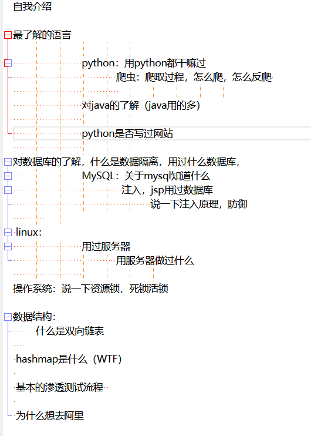

前段时间投了一个简历给一家公司，通过boss直聘走的内推，然后打了一个电话面试。记录一下糟糕的第一次面试，面试过程非常紧张，这还只是电话面试啊。青色的字体表示我的回答, 标题为面试官的问题
自我介绍
完全不知道怎么说，说的一团糟。
上网去查了一下，知乎：https://www.zhihu.com/question/19603341
稍微总结一下就是：
- 时长控制在3分钟内
- 基本自我介绍：
介绍自我的一些基本情况，具体模板为：大家好，我叫xx，来自xx大学xx专业，今天面试的岗位为xx - 突出自身特点，做过的比较牛逼的事情，像知乎回答里的骑车去过西藏。适度吹嘘
- 善用数字
- 把自己向岗位靠拢
- 在自我介绍的时候给面试官留下好印象或好感
最了解的语言
python
那你用python都干过什么
写过爬虫
说一下你写爬虫的思路
这里我巴拉巴拉撤了一大堆，但是因为紧张，说的稀里糊涂的，很杂乱。事后才想起来，为什么我不把最近在写的爬虫的思路直接说出来呢，比如前两天还没写完但是已经有思路的，把博客园文章爬下来解析成md文件的那个爬虫。
如果你是网站的经营者，如何反爬
老实说这一块我真不是特别熟，只知道一点点，但是并不会系统的把他说出来，就随口说了一些，检查IP，user-agent，需要登陆，复杂的验证码。什么的，然后这里我说了一个cookie，面试官随即就问，cookie能反爬吗，我承认我被这样子访问一下问懵逼了（基础不扎实）。
我的理解是，如果一个在请求一个网站的时候，没有带上cookie，网站显示的资源就不全或者说根本不会给回应，比如知乎（我两年没爬过知乎了，已经忘了细节了）。
但是说到这里的时候，面试官说cookie是可以伪造的，然后还有selenium这个东西的存在，让我再想想其他的。
说说对java的了解
对java了解不多
这里面试官提到他们阿里对java的需求更多一些，以后可以多侧重java方面的学习
用python是否写过网页
没有
（耿直的回答）
对数据库的了解，用过什么数据库
用过mysql
什么是数据隔离
不清楚这个东西
（我是真不知道，给问懵了）
之后去学习了一下，发现是个很重要的东西
知乎：https://zhuanlan.zhihu.com/p/79382923
这篇文章还不错，但是不完美，关于幻读那里有点问题。
自己跟着知乎的连接走了一遍写的笔记：https://this-is-y.xyz/2021/04/04/%E5%A5%BD%E6%96%87%E7%AB%A0%E6%94%B6%E8%97%8F%E5%A4%B9/
关于数据库知道什么
写jsp课程设计的使用用到过数据库，知道一些sql注入的东西
说一下注入的原理，如何防御
由于过滤不严或其他原因，恶意用户可以使用精心构造的字符串在数据库查询到设计之外的结果，可以拿到一些敏感数据。严重的时候可以写入文件
关于防御，可以购买安全设备，检测用户输入，使用正则加强过滤，除去字符串中的*-+ or and union等字符串
关于linux操作系统的了解
买了你们阿里云的服务器，完成了一些实际功能
用服务器做过什么
搭建过简单的web服务，运行过xray+crawlergo被动扫描工具，搭建了资产灯塔，运行了CobaltStrike的服务器等
这一块问得很少，不知道是不是我合格了。
关于操作系统，说一下资源锁（死锁，活锁，互斥锁）
死锁的话。我的理解是A进程占有α资源，B进程占有β资源，在这个前提下，A进程向操作系统请求β资源，B进程操作系统请求α资源。但是两个进程占有的资源都不愿意放开，所以请求的资源一直拿不到，就形成了死锁。活锁我忘了
专业课没好好学，这还是上学期刚学的，就给忘了。淦了
说说数据结构里的双向链表
记不太清了
上学期的操作系统都记不清了，更别说上上学期的数据结构了
后面补充：https://www.jianshu.com/p/c47d40e9c85c
hashmap是什么
这里我乱了，明明不知道却在硬装，说了一通md5，还没说明白。（千万不要不懂装懂，面试官等级高我们太多了）
tnd，找文章看了都没看懂，太菜了。
说说基本的渗透测试流程
也是说的一团糟，很乱。需要系统的去过一遍
最后一个问题，为什么想来我们这里
为了更好的学习，为了未来的就业
稀里糊涂的
